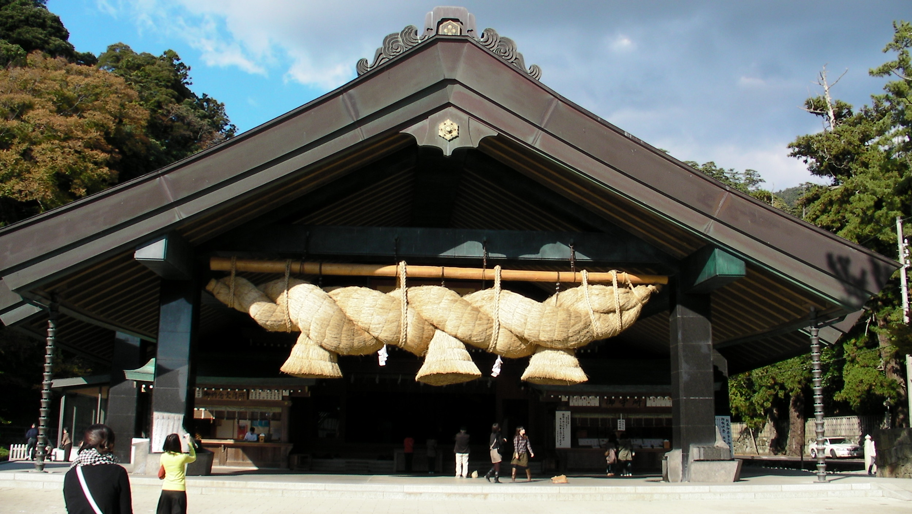

観光スポット
Tourist attractions
目的別モデルコース
Model Course
コンテンツ
content
グルメ
Gourmet
温泉
Hot spring
周辺観光
Surrounding tourism
松江城
松江城は、現在の島根県松江市殿町に築かれた江戸時代の日本の城。別名・千鳥城。現存天守は国宝、城跡は国の史跡に指定されています。この他に日本さくら名所100選や都市景観100選に選ばれています。天守が国宝指定された5城のうちの一つです。
ホテル
食事
観光
地図

出雲大社
縁結びの神・福の神として名高い出雲大社。御祭神は大国主の大神で、広く「だいこくさま」として慕われ、日本全国でお示しになられた様々な御神徳は数多くの御神名によって称えられています。
ホテル
食事
観光
地図
熊野大社
熊野大社は、出雲大社と共に出雲国一宮として古くから信仰を集めている神社。日の発祥の神社として「日本火出初之社（ひのもとひでぞめのやしろ）」とも呼ばれ、その歴史は古く、創建は神代といわれています。
ホテル
食事
観光
地図
八重垣神社
「早く出雲の八重垣様に、縁の結びが願いたい」という出雲の古い民謡の一節からもわかるとおり、八重垣神社は出雲の縁結びの大神として知られています。鏡の池では、縁結び、心願成就占いの池として占い用紙に硬貨を乗せて浮かべ、縁の遅早を占う多くの方の姿が毎日見受けられます。見どころは、連理玉椿、板絵著色神像 、奥の院佐久佐女の森内の鏡の池での縁占いなどです。
ホテル
食事
観光
地図
清水寺
587年に開かれた天台宗の古刹。十一面観音様をご本尊に厄払いの寺として慕われています。鬱蒼と茂る杉林を登ると瑞光山の山腹に清水寺はあり、5万坪余りの境内には、山陰唯一の三重塔など、県や国の重要文化財も数多く、荘厳な空気に包まれています。
ホテル
食事
観光
地図
モデルコース
オプショナルツアー
旅の予約
人気のお土産
宍道湖